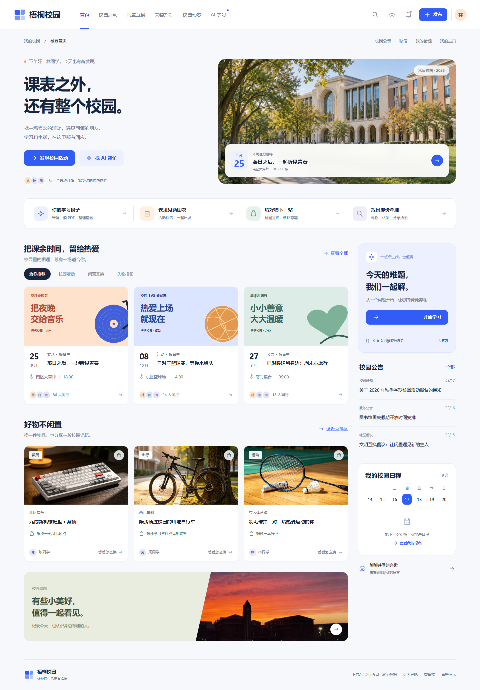
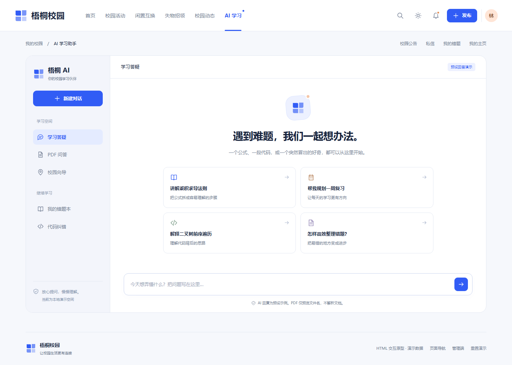
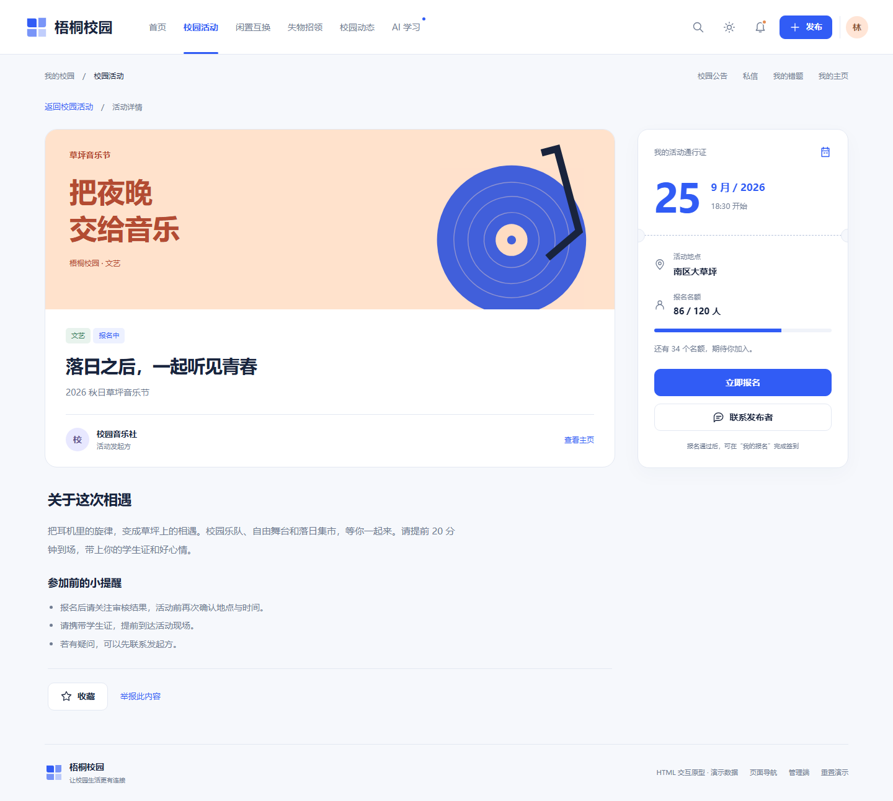
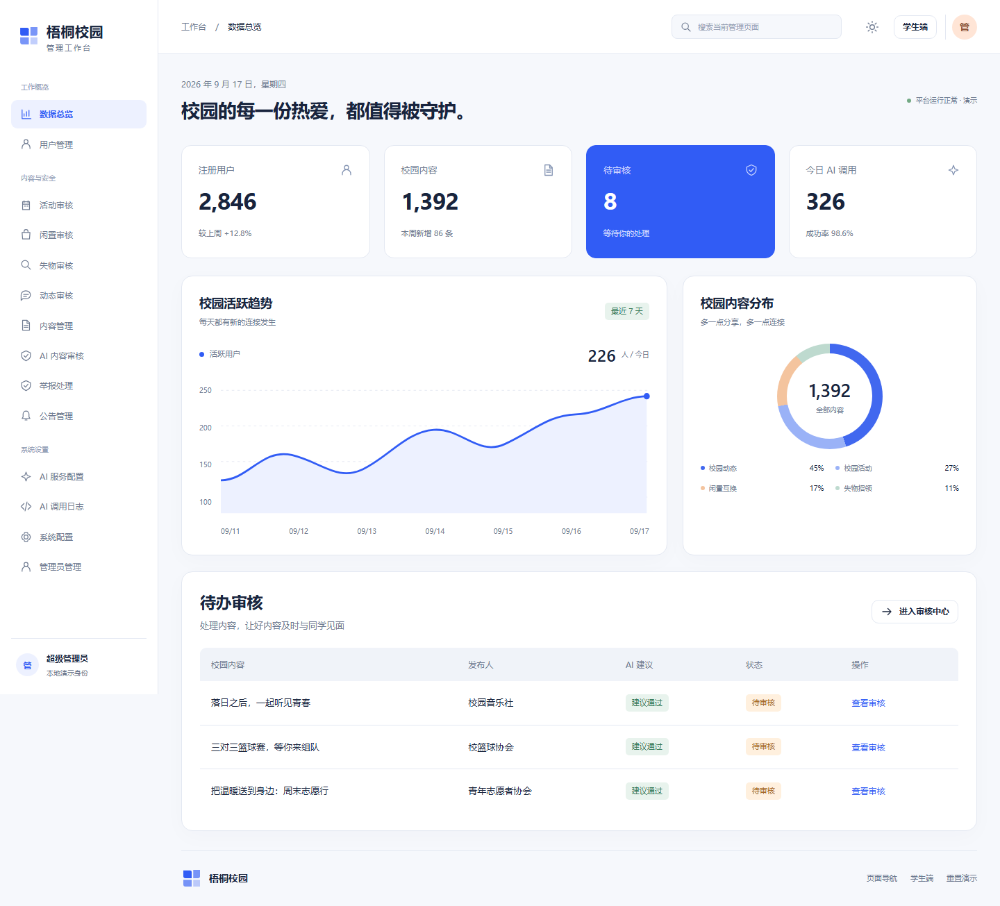
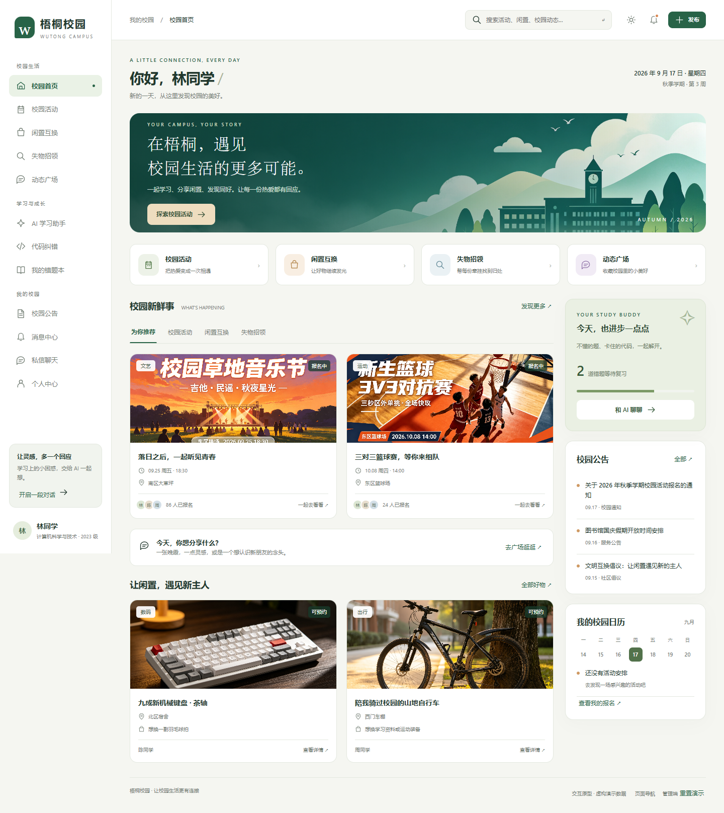

一个更轻盈、更有校园感的新版本。
重新设计导航、首页构图、活动封面、学习空间和管理工作台。保留原业务与交互底稿，用统一的蓝白视觉呈现新的校园体验。

校园首页
顶部导航、全新校园主视觉、活动与闲置内容分区。

AI 学习空间
会话导航、分场景提问入口、专注输入与阅读的布局。

活动详情
可编辑的活动封面，加上集中展示时间和地点的报名面板。

管理工作台
清晰的待办层级、趋势展示与统一表格样式。
前后对比
左侧为上一版交付底稿，右侧为本次视觉重设计。截图区域可滚动；新版完整交互请进入学生端查看。
V1 · 功能与交互底稿

V2 · 本次交付版本
交给其他 AI 时：请复制整个文件夹，或发送 V2 ZIP。先阅读实施任务书，再参考设计规范和 HTML。原型无需后端；报名、聊天、AI、审核为本地演示，真实接入边界已写入文档。原项目“毕业设计（更新版本）”保持只读。